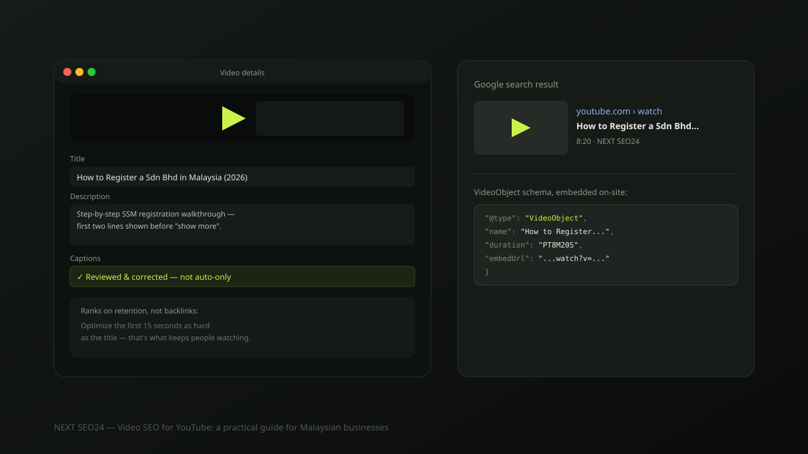

Video SEO for YouTube: a practical guide for Malaysian businesses
YouTube is the world's second-largest search engine, but it doesn't rank content the way Google's web search does — watch time and retention matter more than backlinks. Here's what actually moves a video's visibility, and an honest read on when video is worth the investment for a small business in the first place.
Why YouTube SEO works differently from web SEO
Google's web search leans heavily on backlinks and page authority. YouTube's ranking system leans on audience retention — whether people who click actually keep watching, and whether they come back for more of your videos. A video with a great title that loses most of its audience in the first 15 seconds will rank worse over time than a plainer video people actually finish. Optimize the opening seconds as hard as you optimize the title.
Keyword research for video is different too
People search YouTube with more action-oriented phrasing than Google — "how to," "review," "vs," "unboxing," "tutorial." Type your topic into YouTube's own search bar and read the autocomplete suggestions; they reflect real YouTube search demand more directly than a generic keyword tool built for web search. A Malaysian SME might find "how to renew business license Malaysia" performs very differently on YouTube than the phrasing that works on Google.
Titles, descriptions and tags that actually help
- Title. Put the primary keyword phrase naturally near the front — "How to Register a Sdn Bhd in Malaysia (2026 Step-by-Step)" beats a vague, clickbait-only title for both search and honest expectation-setting.
- Description. The first two lines show in search results before "show more" — write them as a real summary containing your keyword, not filler. The rest of the description can include a timestamped outline, which YouTube can surface as chapters.
- Tags. Tags carry far less weight than they used to and mainly help with misspellings and close variants — don't spend more than a minute on them.
Captions and transcripts: the lever most people skip
YouTube can't watch your video the way a person can — captions and transcripts give it readable text describing exactly what's said, which is a far stronger relevance signal than metadata alone. Auto-generated captions are a reasonable starting point, but they routinely mangle product names, brand names and technical terms. A ten-minute manual review and correction pass is one of the highest-leverage, most-skipped steps in video SEO.
Embedding video on your own site, done properly
Embedding a relevant video on the matching service or product page keeps visitors on the page longer — a signal Google's ranking systems do weigh — and pairing it with VideoObject structured data can make it eligible to appear directly inside Google's web search results, not just on YouTube.
{
"@context": "https://schema.org",
"@type": "VideoObject",
"name": "How to Register a Sdn Bhd in Malaysia",
"description": "Step-by-step SSM registration walkthrough for 2026.",
"thumbnailUrl": "https://example.com/img/video-thumb.jpg",
"uploadDate": "2026-07-31",
"duration": "PT8M20S",
"embedUrl": "https://www.youtube.com/embed/VIDEO_ID"
}Place this on the exact page the video is embedded on, matching the video's real title, description and length — mismatched schema is treated the same as any other inaccurate structured data.
Is video SEO worth it for your business right now?
Honestly, not always. Video pays off fastest for product demonstrations, genuine before/after results, and answering one specific question customers ask repeatedly — categories where seeing beats reading. It's rarely worth starting as a broad content strategy for a business without the resources to produce it consistently; a handful of well-made, evergreen videos will outperform a large volume of rushed ones, the same principle that applies to blog content.
Frequently asked questions
Do closed captions actually help a YouTube video rank?
Yes, meaningfully. YouTube can't watch a video the way a human can — captions and transcripts give it readable text describing exactly what's said, which strengthens topical relevance for search far more reliably than titles and descriptions alone. Auto-generated captions are a starting point, but reviewing and correcting them, especially for product names and technical terms, is worth the time.
Should I embed YouTube videos directly on my website?
Yes, on the specific page the video is most relevant to, alongside VideoObject structured data describing it. This can make the video eligible to appear directly in Google's web search results, not just YouTube's, and a well-matched video increases the time visitors spend on the page — a signal Google's ranking systems do weigh.
Is video SEO worth the investment for a small business?
Only for specific use cases, honestly. It's usually worth it for product demonstrations, before/after service results, or answering one specific question your customers ask repeatedly. It's rarely worth it as a general content strategy for a business without the resources to produce video consistently — a handful of well-made, evergreen videos beats a large volume of low-effort ones.
Thinking about adding video to your SEO strategy?
Tell us about your business — we'll give you an honest read on whether video is worth it right now, and what to start with if it is.
Chat on WhatsApp →